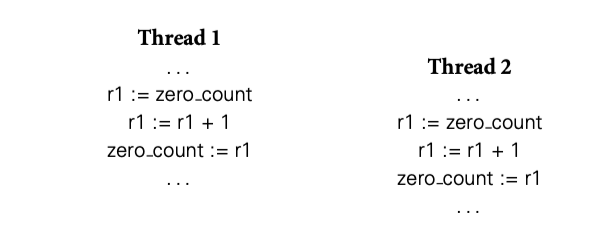

concurrency 不是什么新思想。很多基础理论是 1960 年代，Algol 68 就已经包含的并发编程功能。然而，对并发的兴趣广泛流行是最近发生的，部分源于多核，多处理器机器的成本大幅降低，部分源于图形，多媒体和网络应用的流行，这些应用天生并发。
Levels of Parallelism
Parallelism 在现代计算机系统的每个层次都有体现。在电路和门级相对容易利用并发，信号可以同时在数千个连接上传递。当升级到处理器和核心时，然后到运行在它们上面的很多软件层级，parallelism 粒度--任务的规模和复杂性--随之提升，而且越来越难以弄清每个任务应该完成什么以及任务应该如何协调。
40 年来，微体系结构研究致力于寻找更好的方法利用机器语言程序中的 instruction-level parallelism (ILP)。正如我们在第 5 章看到，深度大规模流水型的结合，和激进的推测使得现代处理器可以跟踪数百个运行中的指令，在每个周期都进步，然后每个周期中完成几个。世纪之交之后不久，很明显已经到达了瓶颈：在传统程序中无法获得更多的 ILP
在下一个更高的粒度级别，称为 vector parallelism ，可以在非常大的数据集上每个元素重复执行操作。旨在利用这种并行性的处理器是 1960 到 1990 年代的超级计算机的主要形式。这些遗产仍然留在主流处理器的向量指令中（x86 的 MMX，SSE，AVX），在现代图形处理器（GPU）处理单元，，峰值性能可以达到 CPU 的 100 倍以上。
不幸的是，vector parallelism 仅在一些程序中有用。随着 ILP 的终结，以及散热施加的时钟频率的限制，今天的通用目的计算从多核处理器中获得了提升，要求粗粒度线程级别的 parallelism 。因此，向多核的迁移需要程序基本结构的改变：如果并行性曾经是不可见的实现细节，现在必须将其写到高级程序结构汇总。
Levels of Abstraction
在今天的多核机器上，不同的开发者需要了解不同程度的并发。
“黑盒”并行库，用起来最简单。比如排序或者线性代数库，调用者并不需要知道并发执行的细节。在数据库世界里，SQL 的查询表达通常也是并发执行的。微软的 .NET 框架包括 LINQ 允许程序数据结构进行数据库风格的查询，同样并行被遮掩起来了
在少一点的抽象层面上，程序员可能知道某些任务相互独立。这种任务可以安全的并发执行。比如在 C# 中，我们可以这样用：
Parallel.For(0, 100, i=> {A[i] = foo(A[i]); });
并行循环，运行更快，极限情况可以使用 100 个核心。
如果我们的任务不是独立的，并发运行时我们需要显式同步。同步要消除线程之间的 race。假定之前的例子中 foo 从 A[i] -1 并且记录结果为 0 的计数。可以自然的这样实现：
int zero_count;
public static int foo(int n) {
int rtn = n - 1;
if (rtn == 0) zero_count++;
return rtn;
}
考虑并发运行这个代码会发生什么：

如果指令如图所示，两个线程加载了同一个 zero_count，同时加 1，同时存回 zero_count。结果少加 1.
通常，race condition 会出现在两个或者更多线程访问相同对象，行为取决于哪个线程先获取到。在上面的例子中，线程 1 对 zero_count 的 store 于 线程 2 对 zero_count 的 load 就是竞争。如果线程 1 先完成，我们获得正确结果，如果线程 2 先完成，结果错误。
最常用的手段就是 critical section，变成 atomic--从其他线程的角度来看只有“一次”。这上面例子中，critical section 是 load , increment, store。让这个操作序列 atomic 的方法是使用互斥锁，在第一个操作前获取锁，最后一个操作后释放锁。我们在 13.3.1 13.3.5 中学习锁。在 13.3.2 13.3.4 中我们还学习不使用锁的 atomic 机制。
在底层抽象，专家级开发者还需要理解硬件和运行时系统实现同步机制的细节。本章只传达出这个意思，但是在这个层面上的完整处理超出了本书的范围。
13.1.1 The Case for Multithreaded Programs
举了浏览器的例子。
The Dispatch Loop Alternative
如果语言和库都没有支持 thread，浏览器就要用更多的顺序结构，然后使用中心 loop 管理处理过程。
为了确保交互，循环中不能有任务执行时间过长。调度循环的主要问题是细分任何和保存状态的复杂性隐藏了程序本来的结构。每个单独的任务应该用标准的控制流机制优雅的表达，但是由于在循环调度中所以不能有高延迟操作。事实上，调度循环打破了程序的内聚，使得管理程序参与了任务本身的控制。
13.1.2 Multiprocessor Architecture
parallel 计算机硬件多种多样。有分布式系统--互联网应用。有并行但不是分布式--比如超级计算机。
历史上，大多数并行机器都是同质的，处理器都是同型号的。最近，很多机器加入了可编程 GPU，开始时分离的处理器，后面是单片的不同核心。同时 GPU 核心内部同质，与 CPU 迥然不同，组成了庞大的异构系统。未来系统会有各种类型的核心，来处理不同类型的任务。
在理想世界中，编程语言和运行时应该将程序片段在合适的时间映射到合适的核心，但是这是巨大的挑战。在 2015 年，希望利用 vector 并行的开发者还需要写 OpenCL 和 CUDA 类似的语言。主程运行在 CPU 上，然后将结果告诉 GPU。
本章剩余部分，我们将会专注于在同构系统上 thread 层级的抽象。很多重要的架构问题都涉及内存系统。在某些机器中，所有核心都可以访问所有内存，硬件保证每次写入对所有核心可见。另外一些机器区分处理器之间的主存，然后核心通过消息通信同步。折中设计的话，有些机器以不相干的方式共享内存，但是让写入对其他核心可见，需要显式 flush cache。
从语言或者库实现的角度来看，shared-memory 和 message-passing 的主要硬件不同是：消息需要两个核心参与，一个发一个收。内存共享的机器，一个核心可以读写，而不需要其他核心参与。
小型机内存是统一的，每个核心距离内存一样远，大型机里就不一定，距离近的内存访问更快。
Memory Coherence
缓存引入了共享内存机器的一个严重问题：除非我们做一些特殊操作，距离近的核心改变会比距离远的核心改变更快被可见。这个问题--如何保持核心之间数据的一致性--被称为 coherence 问题。简单的 bus 总线机器上，这个问题容易解决：广播修改。当核心需要 write a cache line, 请求 exclusive 副本，等待其他核心的副本无效。bus 总线上的等待可以忽略不计，消息的自然顺序确定了谁获得这次 exclusive 副本。无效副本的核心需要从主存重新建立缓存。
更大型的计算机（不使用 bus 总线）缓存一致性很难解决，略...【译者注：参看原文】